Conteúdo e fontes
Dois arquivos publicados foram identificados no acervo da ANA. Isso não confirma o número de instituições participantes nem o conteúdo do debate oral. As recomendações desta NT são análises, não deliberações atribuídas à reunião.
- Síntese executiva
- 1. Escopo, fontes e cortes temporais
- 2. Vertical CEMADEN — chuva, seca e prognósticos
- 3. Vertical ONS — armazenamento e operação da cascata
- 4. Cruzamentos técnicos e consequências operacionais
- 5. Horizontes de acompanhamento
- 6. Leitura regulatória e restrições apresentadas
- 7. Registro da reunião e acompanhamento proposto
- 8. Qualidade da informação e ressalvas de leitura
- 9. Fontes, apresentações integrais e rastreabilidade
- ANEXO I — Resumo para o Relatório Anual / reunião em números
[C] CEMADEN · [O] ONS. Referências de página usam a posição física no PDF, a partir de 1. A versão navegável e o PDF preservam o mesmo conteúdo técnico.
Síntese executiva
A 10ª reunião do Paranapanema, de 22 de outubro de 2026, apresenta um quadro de aportes elevados e estoques relevantes, distinto de um diagnóstico de escassez generalizada. O ONS informa energia natural afluente (ENA) de outubro em 292% da média de longo termo (MLT), com dados até 21/10, e energia armazenada (EAR) de 78,6% na posição de 21/10. O percentual de ENA é parcial do mês; a EAR é uma posição de estoque energético, não um percentual de volume útil de um único reservatório. [O, pp. 4 e 11]
O CEMADEN identifica excesso moderado no TSI-6 de Rosana e Capivara e normalidade em Jurumirim. Na janela TSI-3, os três recortes são classificados como excesso moderado. A previsão GEFS inicializada em 22/10 indica aproximadamente 182 mm acumulados em 14 dias, com dispersão do conjunto. A leitura integrada aponta atenção à resposta da bacia e à propagação de novos aportes, sem converter o valor de chuva em vazão determinística. [C, pp. 8–9 e 14]
A cascata apresenta, em 21/10, 80% de volume útil em Jurumirim, 79% em Chavantes, 76% em Capivara e 94% em Mauá. Na simulação do ONS para 22/10 a 30/11, os valores finais são, respectivamente, 85%, 78%, 82% e 94%, condicionados ao SMAP/ONS, à chuva ECMWF e às defluências assumidas. Não se trata de garantia de armazenamento nem de decisão nova extraída da reunião. [O, pp. 9 e 20–21]
O principal foco operacional desta consolidação é conciliar armazenamento, passagem dos aportes pela cascata e condições a jusante. O painel de Capivara até 20/10 destaca afluência de 3.790 m³/s e defluência de 5.062 m³/s. Essa leitura justifica acompanhar os hidrogramas e suas variações, mas não comprova, isoladamente, inundação, dano ou descumprimento de regra. [O, p. 17]
Quadro executivo
| Indicador | Valor / condição | Referência e limite |
|---|---|---|
| ENA da bacia | 292% da MLT | ONS, p. 4; outubro parcial até 21/10 |
| EAR da bacia | 78,6% | ONS, p. 11; posição em 21/10 |
| TSI-6 | Rosana e Capivara: excesso moderado; Jurumirim: normal | CEMADEN, p. 8; outubro parcial |
| TSI-3 | Excesso moderado nos três recortes | CEMADEN, p. 9; outubro parcial |
| Chuva GEFS | ≈182 mm em 14 dias | CEMADEN, p. 14; previsão de 22/10, não observação |
| Capivara — vazão defluente | 5.062 m³/s | ONS, p. 17; valor destacado no painel até 20/10 |
| Simulação de armazenamento | 85% / 78% / 82% / 94% VU | Jurumirim / Chavantes / Capivara / Mauá; horizonte até 30/11 |
1. Escopo, fontes e cortes temporais
Na consulta ao acervo oficial da ANA em 23/10/2026 foram identificadas duas apresentações publicadas para esta reunião: CEMADEN e ONS. Ambas foram acessadas pela página /view e pelo arquivo PDF de download. Esta NT utiliza somente essas duas apresentações como base técnica. A disponibilidade de dois arquivos não demonstra que apenas duas instituições participaram, nem permite afirmar que não houve outras exposições orais.
Não foi incorporada uma vertical INMET/INPE de outra reunião para preencher a ausência de arquivo. Os produtos meteorológicos desta NT são aqueles apresentados pelo CEMADEN, com as respectivas origens indicadas em suas lâminas. As leituras integradas e recomendações são identificadas como análise desta consolidação, e não atribuídas automaticamente às instituições expositoras.
A página eletrônica e o PDF são gerados da mesma base de texto, tabelas e figuras. A numeração das fontes se refere à posição física da página no PDF, a partir de 1; alguns números impressos nas apresentações diferem dessa posição. Foram selecionadas 24 figuras originais, com fonte, página e legenda de leitura. As apresentações integrais permanecem disponíveis ao final.
| Fonte / produto | Corte ou horizonte | Uso nesta NT |
|---|---|---|
| CEMADEN — chuva espacial | 21/09 a 21/10; p. 2 | Antecedente pluviométrico de 30 dias |
| CEMADEN — série de chuva | 01 a 20/10; p. 3 | 122,0 mm observados; referência mensal de 135,5 mm |
| CEMADEN — índices | Outubro parcial; pp. 5–9 | Diagnóstico por índice e escala; preservar as classes da fonte |
| CEMADEN — previsões | 14 dias, 3ª–4ª semanas, 30/45 dias e NDJ | Não fundir horizontes nem substituir uma variável por outra |
| ONS — enquadramento operativo | Início da semana de 17/10; p. 14 | Posição usada na lâmina regulatória |
| ONS — painéis operativos | Até 20/10; pp. 15–17 | Afluência, defluência e volume útil dos painéis |
| ONS — IPDO / estoque | 21/10; pp. 9–12 | Posição mais recente explicitada para o diagrama |
| ONS — simulação | 22/10 a 30/11; pp. 20–21 | Cenário condicional, com condições iniciais próprias |
2. Vertical CEMADEN — chuva, seca e prognósticos
2.1 Situação meteorológica e hidrológica
O diagnóstico dos últimos 30 dias mostra chuva relevante e anomalias positivas em parte expressiva do recorte do Paranapanema, com diferenças espaciais. A série temporal destaca um pulso elevado em setembro e informa 122,0 mm entre 1 e 20/10. A referência climatológica mensal indicada para outubro é 135,5 mm, com base 2001–2024. Comparar diretamente esses valores significa confrontar um acumulado parcial com uma referência mensal completa; não se apresenta essa razão como anomalia dos mesmos vinte dias. [C, pp. 2–3]
O painel de estação chuvosa usa o critério de precipitação superior a 3 mm/dia em quatro de cinco dias, com referência em 21/10. O sinal na região da bacia é compatível com a presença de episódios chuvosos no período. O critério não demonstra, sozinho, persistência futura, distribuição uniforme na bacia ou conversão imediata em afluência aos reservatórios. [C, p. 4]

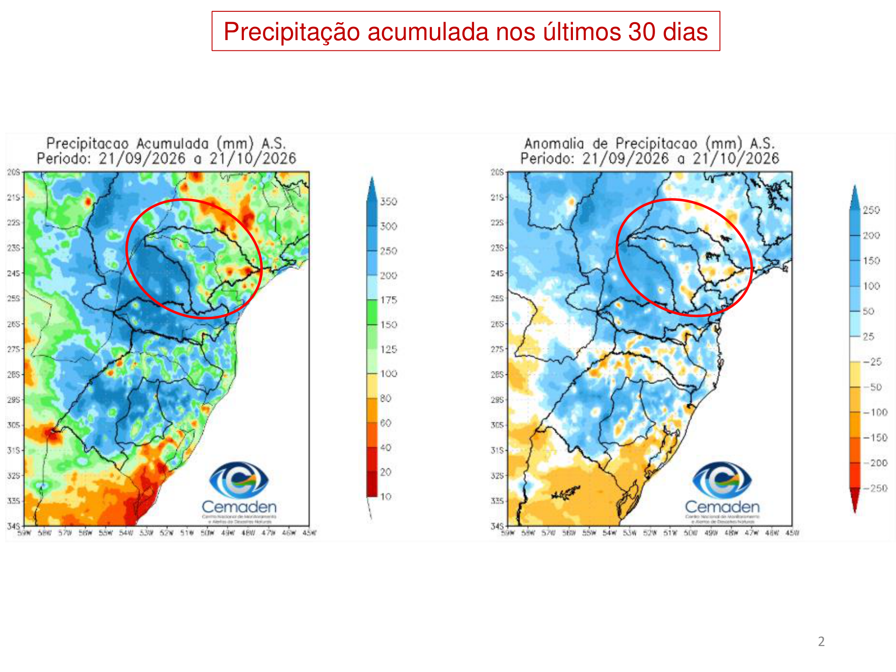

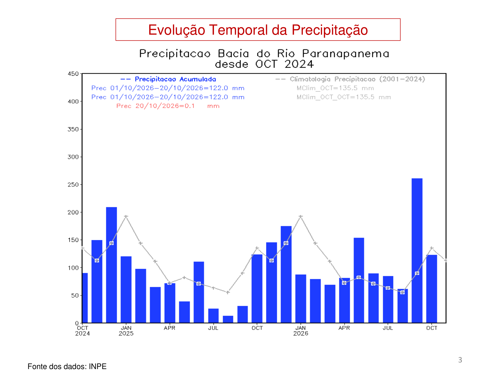

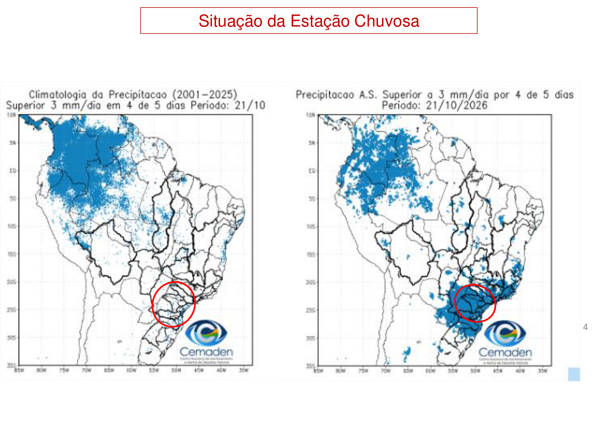
2.2 Indicadores e tendências
Os mapas SPI-3 e SPI-6 apresentam predominância de anomalias padronizadas positivas. O IIS mostra configuração distinta, com predomínio de condições normais e focos de seca fraca. Os produtos não são intercambiáveis: a leitura desta NT preserva seus nomes, escalas e classes, sem reconstruir metodologias não descritas nas lâminas. [C, pp. 5–6]
A lâmina IARA apresenta classes de umidade e, no rodapé, identifica o produto como previsão do índice agregado de recursos de água (IARAp). O quadro registra 99 municípios em muito úmido, 183 em semi-saturado e 3 em saturado. Esses números são mantidos como classificação do produto apresentado; não são contagem de municípios inundados ou de perdas agrícolas observadas. A coexistência de um mapa espacial e de agregação municipal não autoriza inferir que todos os pontos de cada município tenham a mesma condição. [C, p. 7]
No TSI-6, Rosana registra 1,38 e Capivara 1,40, ambos em excesso moderado; Jurumirim registra 0,55, classificado como normal. No TSI-3, Rosana apresenta 1,22, Capivara 1,15 e Jurumirim 1,13, todos em excesso moderado. A diferença entre escalas é relevante: o excesso de curto prazo em Jurumirim não precisa coincidir com a classificação de seis meses. As classes e os valores atuais são transcritos da fonte, sem reclassificação independente. [C, pp. 8–9]
| Recorte | TSI-6 / classe | TSI-3 / classe |
|---|---|---|
| Rosana | 1,38 — excesso moderado | 1,22 — excesso moderado |
| Capivara | 1,40 — excesso moderado | 1,15 — excesso moderado |
| Jurumirim | 0,55 — normal | 1,13 — excesso moderado |

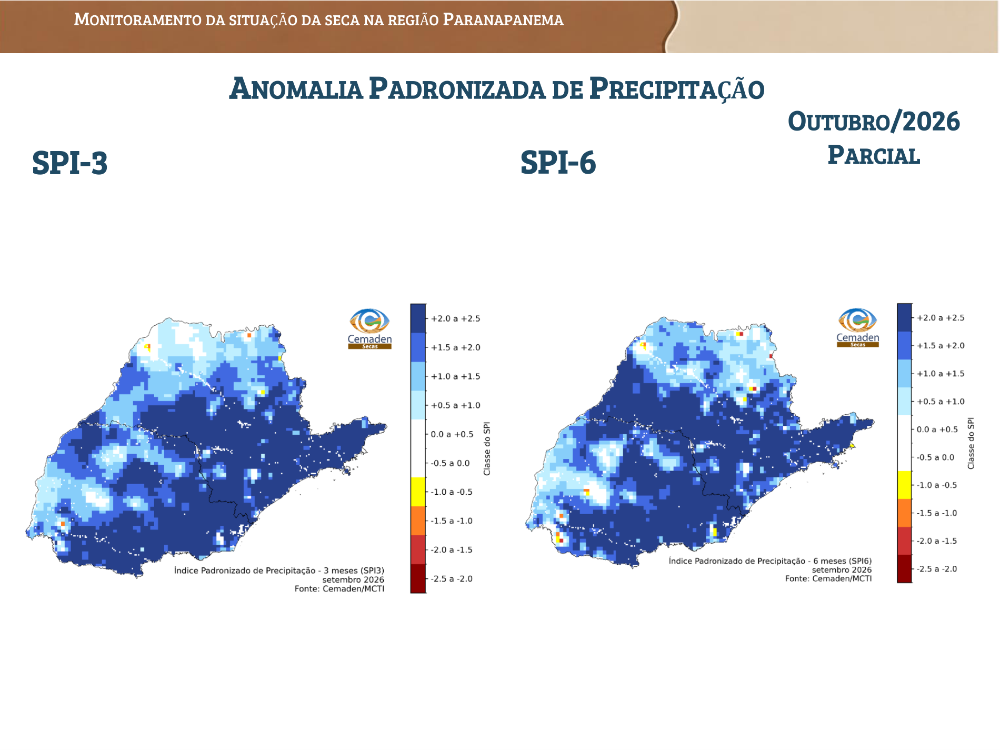

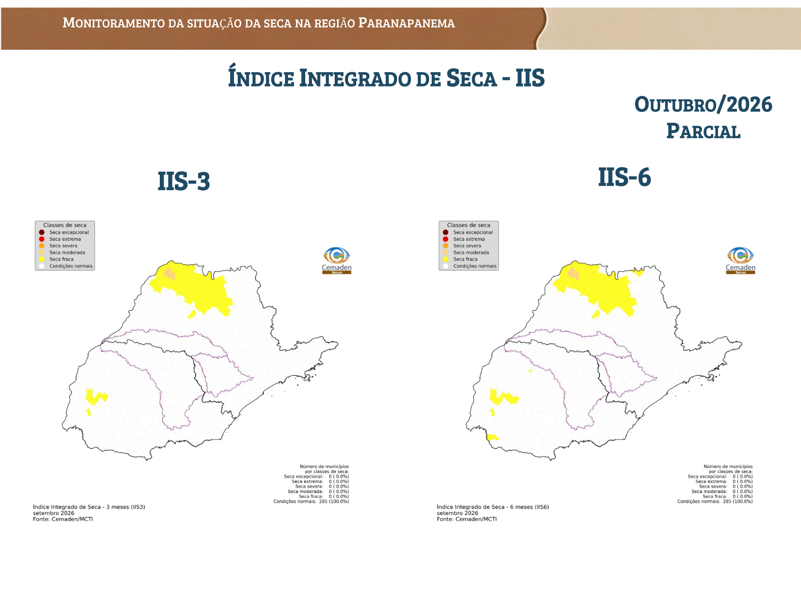

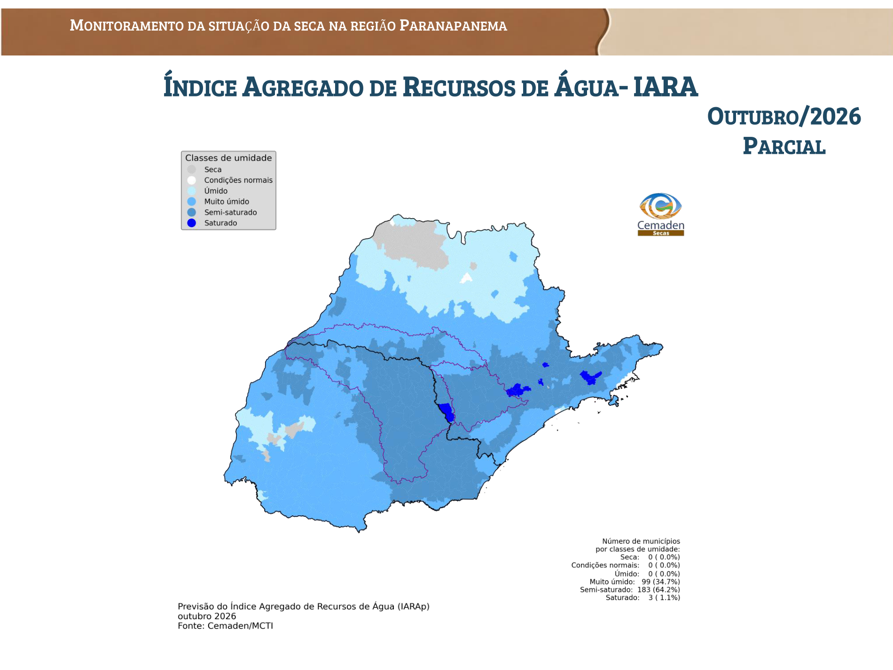

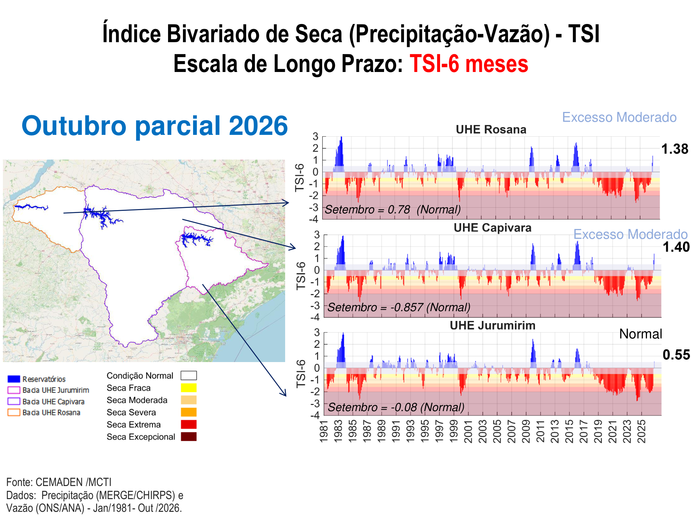

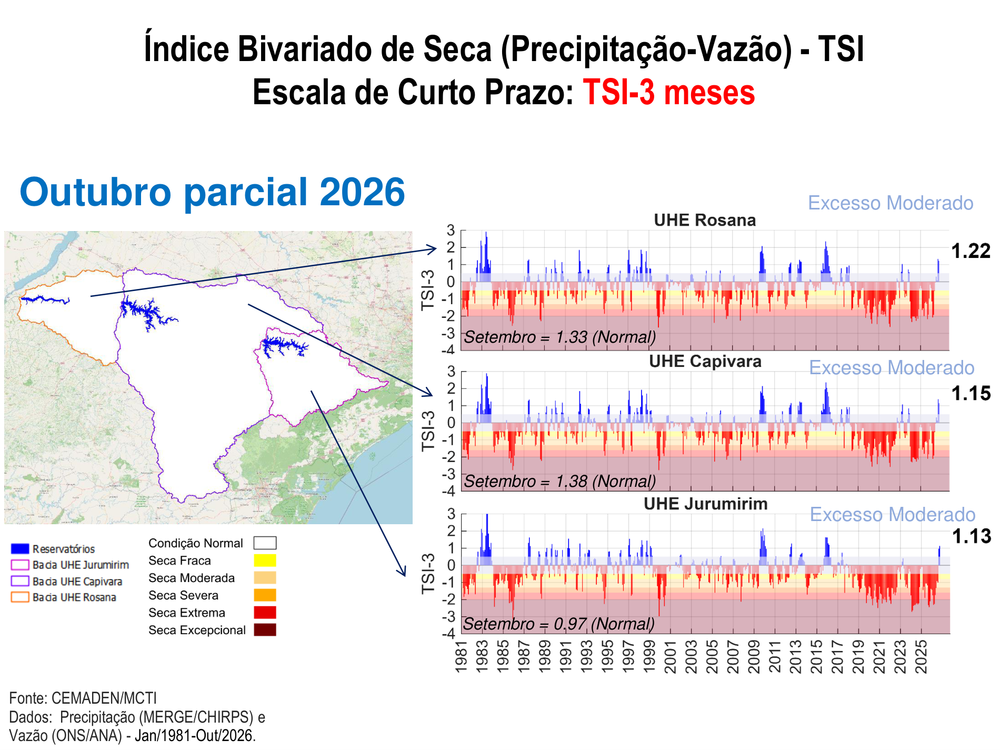
2.3 Previsões e efeitos esperados sobre a bacia
Os painéis GEFS da primeira e segunda semanas indicam continuidade de precipitação na região. A previsão acumulada para a bacia, inicializada às 00 UTC de 22/10, termina próxima de 182 mm em 14 dias e apresenta dispersão visível entre membros. O mapa contém gradiente espacial e áreas com acumulados maiores; portanto, o número médio de área não deve ser atribuído indistintamente a cada município ou área contribuinte. [C, pp. 11–14]
Para a terceira e quarta semanas, CFS/NOAA e ECMWF mostram sinal regional favorável à chuva no centro-sul, mas suas janelas não coincidem: 04–11 e 11–18/11 no CFS, contra 02–09 e 09–16/11 no ECMWF. A convergência é qualitativa e regional; não é uma validação diária entre modelos. [C, p. 15]
As previsões GloFAS de 30 dias para Jataizinho e Colônia Barro Preto apresentam elevação das vazões no curto prazo, seguida de redução das trajetórias centrais, com faixas de incerteza e referências de período de retorno. A lâmina não fornece um percentual único de probabilidade a ser transcrito; não se afirma ocorrência certa de cheia ou excedência de um limiar em todas as realizações. Os mapas subsazonais e sazonais indicam categorias elevadas de vazão em partes importantes da rede, que precisam ser lidas junto com a categoria de incerteza. [C, pp. 16–17 e 22]
O material contextualiza El Niño e apresenta prognósticos sazonais multimodelo para novembro–dezembro–janeiro. Essa informação funciona como contexto climático, não como previsão direta de um hidrograma local. O painel de anos análogos exibe trajetórias distintas entre eventos, reforçando que a analogia não determina uma sequência única para 2026/2027. [C, pp. 18–23]

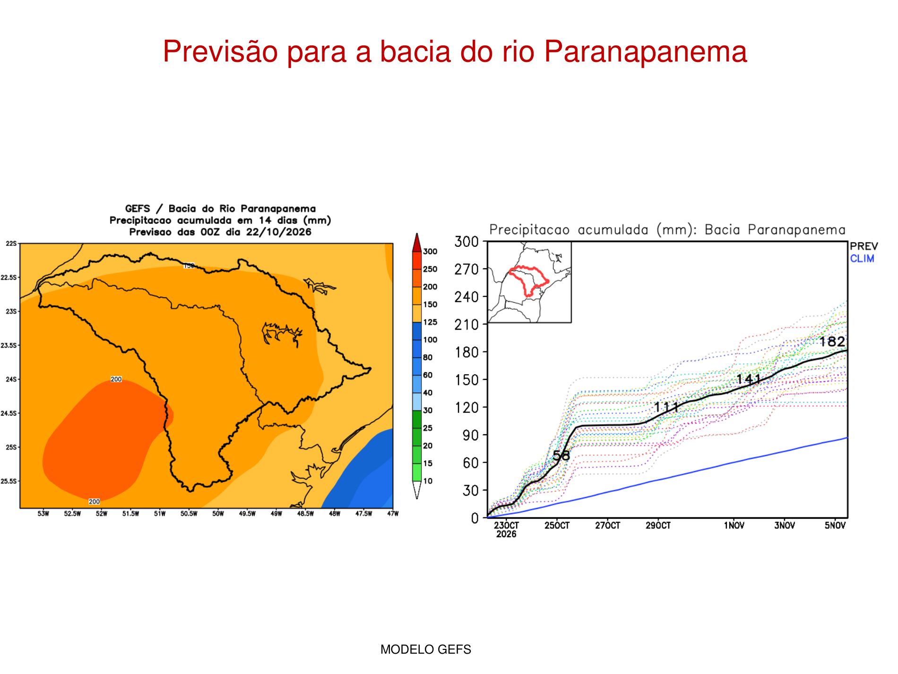

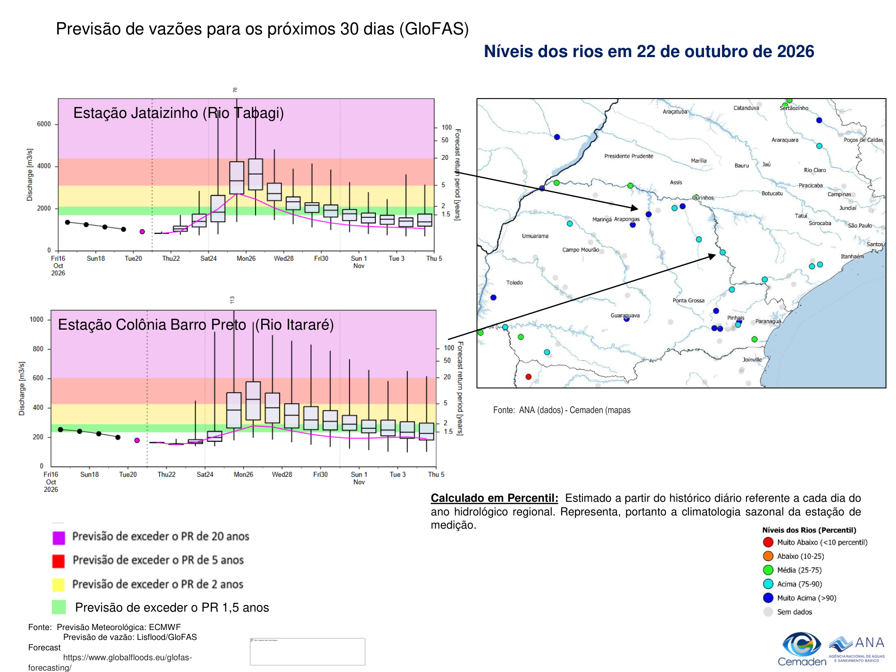

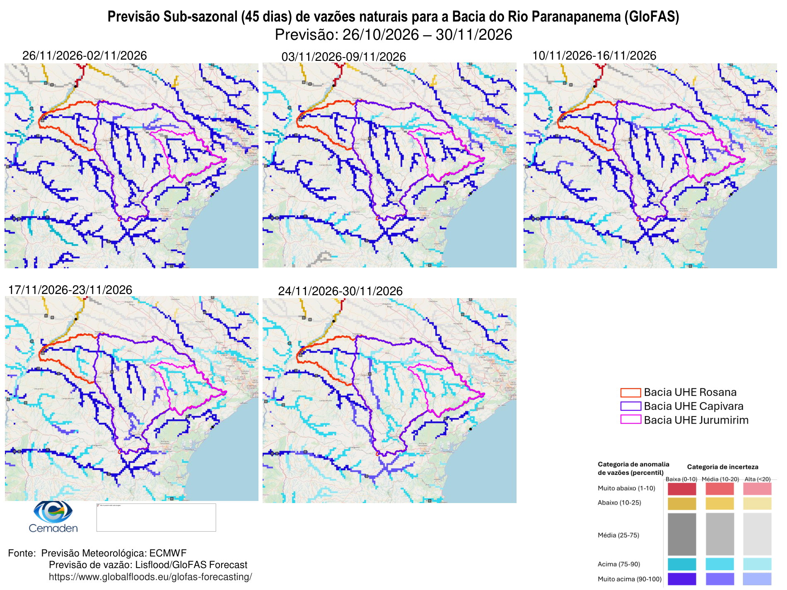

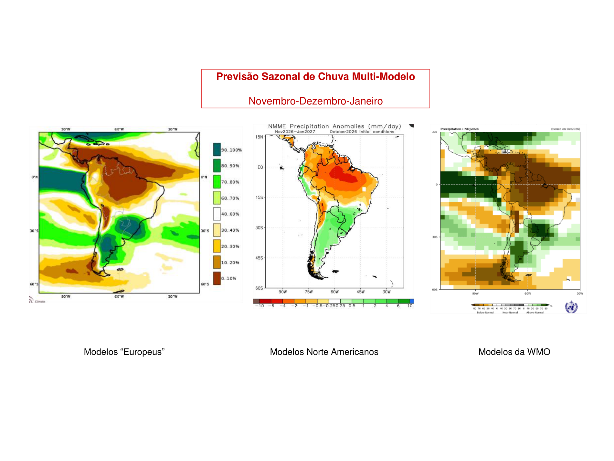

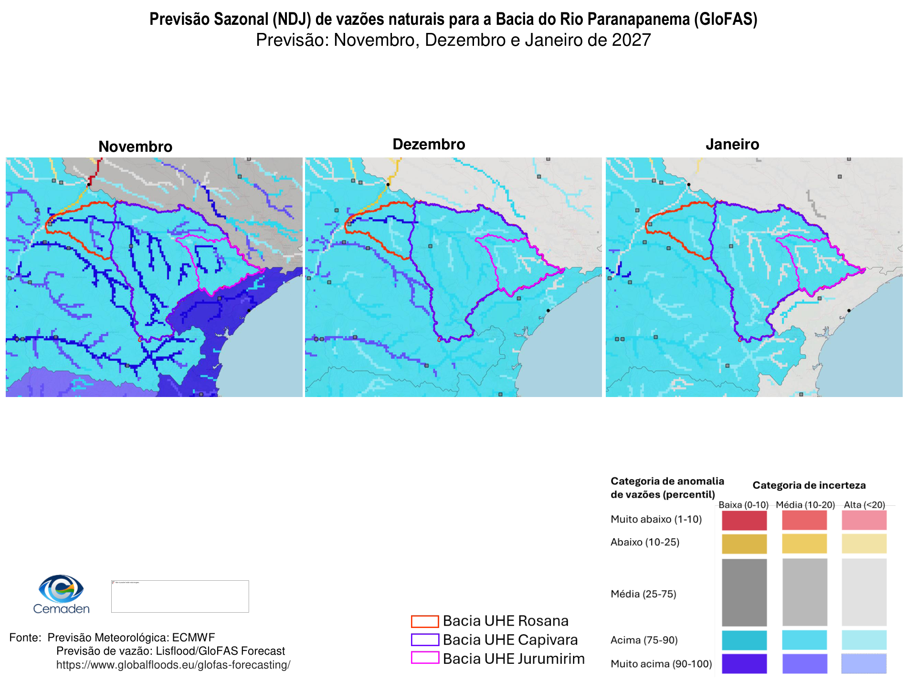
2.4 Efeitos sobre reservatórios e operação
Como inferência técnica desta NT, a combinação de índices úmidos/excesso e novos episódios previstos justifica acompanhar a velocidade de resposta das áreas contribuintes e a sincronização dos aportes entre os afluentes e a calha principal. Não há, na apresentação do CEMADEN, uma regra de defluência ou uma simulação operativa de armazenamento que substitua o cenário do ONS.
A análise deve distinguir vazão natural prevista, afluência ao reservatório e defluência efetivamente praticada. Também deve evitar tratar o TSI de Rosana, cuja área contribuinte integra segmentos a montante, como se fosse um indicador exclusivo de um trecho local ou uma medida de volume armazenado. [C, pp. 8–9 e 16–17]
2.5 Riscos e pontos de atenção
Os pontos de atenção são a recorrência de chuva sobre áreas já úmidas, a concentração espacial dos maiores acumulados, as respostas dos afluentes e a dispersão das previsões. Não foram fornecidos inventários de danos, limiares locais de inundação, cotas de captação ou exposição quantificada de comunidades. Assim, a NT não declara ocorrência de desastre nem converte categorias de índice em impactos comprovados.
Há inconsistências de rótulo temporal e de anotações históricas nas lâminas, registradas na seção de qualidade desta NT. Os gráficos originais são preservados; as inconsistências não são corrigidas silenciosamente nem usadas como fundamento de uma trajetória quantitativa entre setembro e outubro.
2.6 Implicações para a ANA e recomendações analíticas
A contribuição desta vertical para a ANA é apoiar a avaliação antecipada dos aportes e das incertezas. Recomenda-se confrontar as novas rodadas de chuva e vazão com as observações das áreas contribuintes e com a operação da cascata. Trata-se de recomendação de acompanhamento, não de encaminhamento formal recuperado da reunião.
Para a comunicação técnica, priorizar o horizonte, a data da rodada, a variável prevista e a incerteza. O sinal de excesso moderado nos índices não elimina a necessidade de examinar condições locais, assim como uma previsão de chuva elevada não autoriza automaticamente aumento de defluência.
Voltar ao início ↑3. Vertical ONS — armazenamento e operação da cascata
3.1 Situação hidrológica e contexto sistêmico
O Paranapanema apresenta ENA parcial de outubro em 292% da MLT, acima dos valores exibidos para Paraná (182%), Grande (124%) e Paranaíba (75%). A comparação descreve a heterogeneidade entre bacias no material do ONS; não implica que o subsistema Sudeste/Centro-Oeste tenha uma situação uniforme nem que energia afluente seja equivalente a vazão em uma estação. [O, p. 4]
A EAR da bacia está em 78,6% ao final de 21/10. O gráfico mensal arredonda a posição de outubro para 79%, após 84% em setembro. São estoque e aporte distintos: a persistência de ENA elevada pode coexistir com redução de armazenamento, conforme a operação e os demais termos do balanço. Não se deduz uma irregularidade operacional dessa coexistência. [O, pp. 10–11]

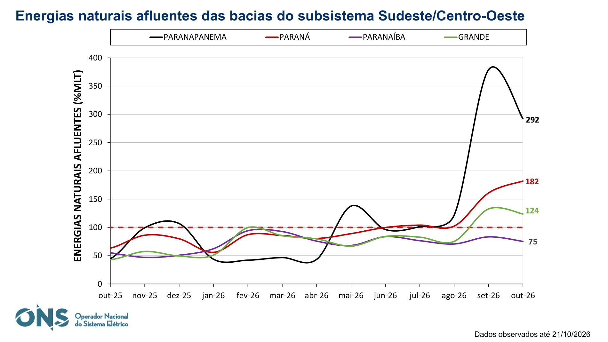

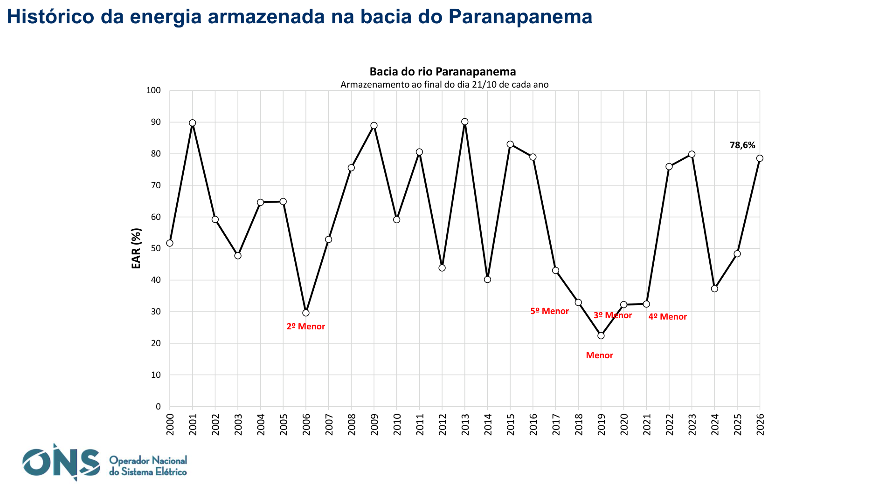
3.2 Reservatórios, indicadores e tendências
O mapa e o diagrama situam a sequência de aproveitamentos do rio Paranapanema e a contribuição de Mauá pelo Tibagi ao sistema de Capivara. Jurumirim, Chavantes e Capivara têm volumes úteis nominais apresentados de 3.165, 3.041 e 5.725 hm³. O material apresenta dois números para Mauá — 663 hm³ na tabela e 667 hm³ no diagrama —, que não são reconciliados nesta NT nem usados em cálculos derivados. [O, pp. 8–9]
Na posição IPDO de 21/10, o diagrama registra 80% VU em Jurumirim, 79% em Chavantes, 76% em Capivara e 94% em Mauá. As séries mostram recomposição recente de Jurumirim e Chavantes e redução recente de Capivara, embora os três estejam acima das posições correspondentes de 2024/2025 no trecho final do gráfico. A conclusão é reservatório a reservatório; não se substituem essas trajetórias pela média da bacia. [O, pp. 9 e 12]

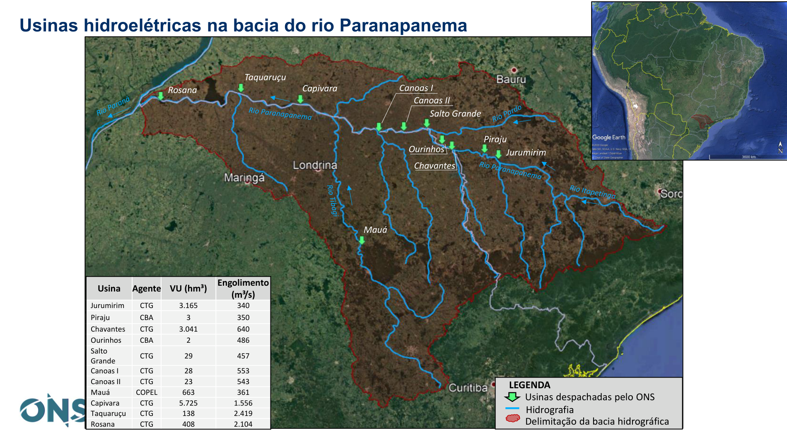

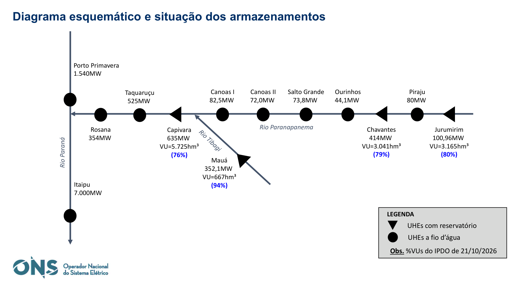
3.3 Operação observada e efeitos a jusante
Nos painéis com dados até 20/10, Jurumirim apresenta afluência de 407 m³/s e defluência de 505 m³/s; Chavantes, 588 e 984 m³/s; Capivara, 3.790 e 5.062 m³/s. Os valores destacados de volume útil nesses mesmos painéis são 79%, 79% e 78%, respectivamente. Eles não devem ser substituídos pelos percentuais de 21/10 sem explicitar a mudança de corte. [O, pp. 15–17]
Nesses pontos finais dos painéis, a defluência supera a afluência, enquanto os hidrogramas mostram episódios recentes de grande amplitude. A interpretação operacional é a necessidade de avaliar passagem de vazões, evolução dos níveis e articulação da cascata. Não é possível calcular balanço acumulado ou atribuir causa única à variação de volume a partir de um único valor final de cada curva.
Capivara merece destaque por receber a contribuição do sistema principal e do Tibagi e por apresentar a maior ordem de grandeza de vazões nos painéis. Os efeitos efetivos a jusante dependem de propagação, condições locais e operação dos aproveitamentos seguintes. As apresentações não oferecem elementos suficientes para quantificar áreas inundadas, danos ou velocidades de variação de cota junto aos usuários. [O, pp. 8–9 e 17]
| Reservatório | Afluência — m³/s | Defluência — m³/s | VU do painel | Corte |
|---|---|---|---|---|
| Jurumirim | 407 | 505 | 79% | Até 20/10 — p. 15 |
| Chavantes | 588 | 984 | 79% | Até 20/10 — p. 16 |
| Capivara | 3.790 | 5.062 | 78% | Até 20/10 — p. 17 |

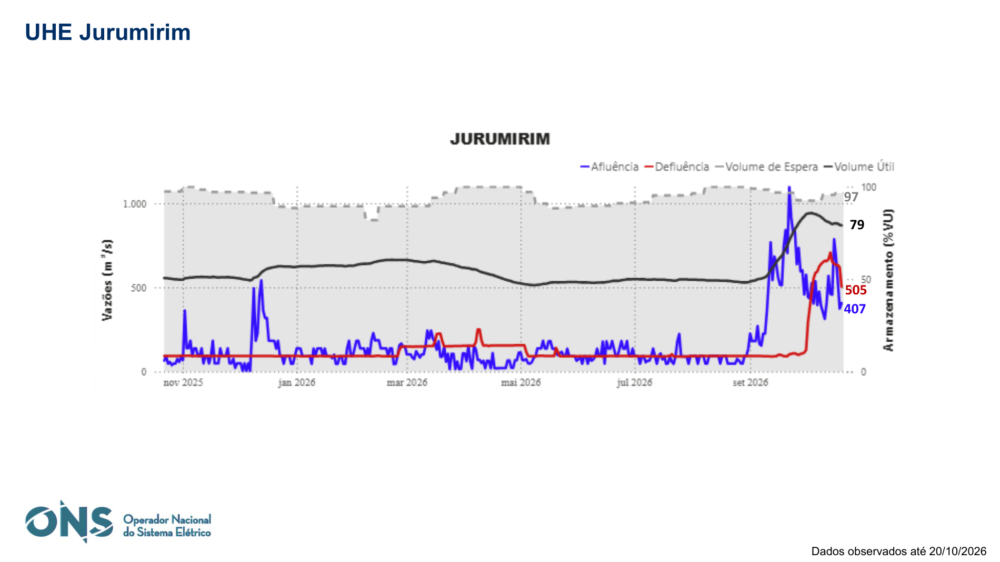

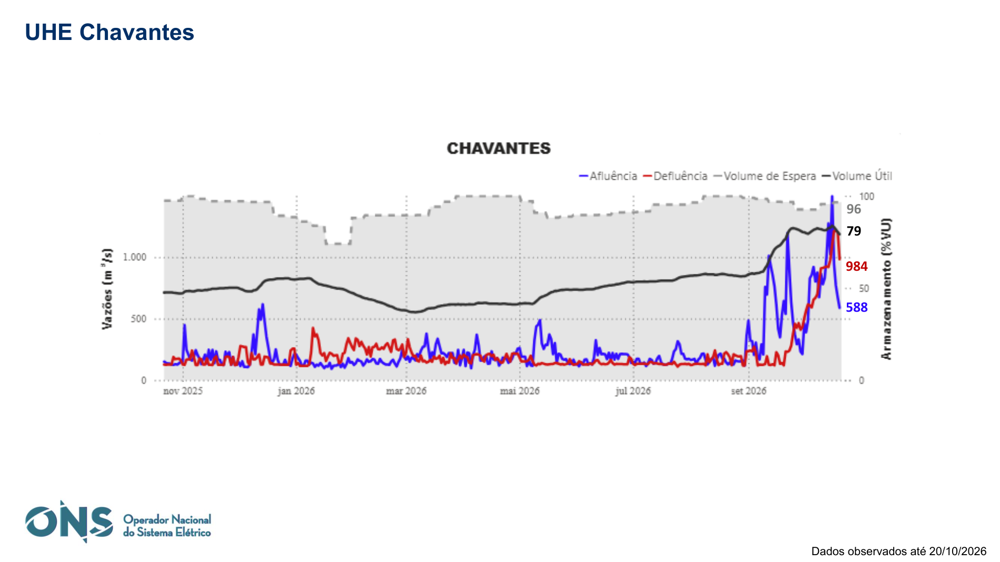

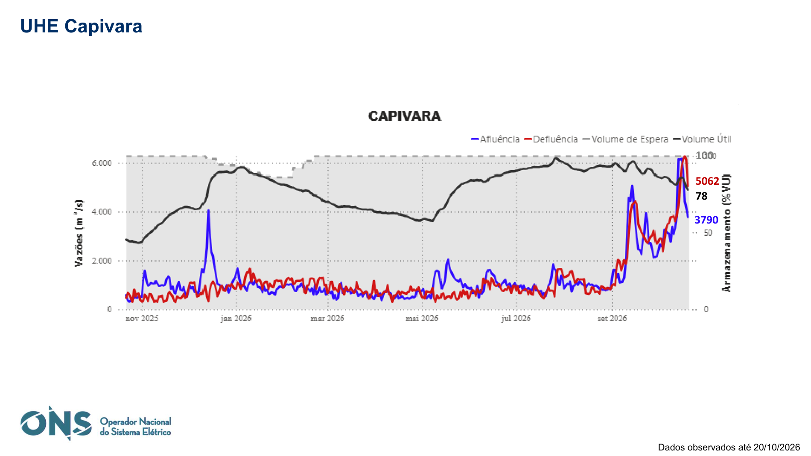
3.4 Perspectiva de armazenamento e premissas
A simulação do ONS abrange 22/10 a 30/11, utiliza o SMAP/ONS e afluências calculadas com previsão de chuva ECMWF. As diretrizes apresentadas são defluências médias de 305 m³/s em Jurumirim, 495 m³/s em Chavantes, 725 m³/s em Mauá e 1.980 m³/s em Capivara. São médias assumidas no cenário; não descrevem todas as liberações diárias e não são reproduzidas aqui como decisão tomada na reunião. [O, p. 20]
O gráfico parte de 80%, 79%, 94% e 74% VU para Jurumirim, Chavantes, Mauá e Capivara e termina em 85%, 78%, 94% e 82%. A projeção combina recomposição em Jurumirim e Capivara, pequena redução em Chavantes e manutenção de Mauá. Essa trajetória não equivale à extrapolação das vazões observadas até 20/10, pois usa condições iniciais e premissas próprias. [O, p. 21]
| Reservatório | IPDO 21/10 | Inicial da simulação 22/10 | Final até 30/11 | Defluência média simulada |
|---|---|---|---|---|
| Jurumirim | 80% | 80% | 85% | 305 m³/s |
| Chavantes | 79% | 79% | 78% | 495 m³/s |
| Capivara | 76% | 74% | 82% | 1.980 m³/s |
| Mauá | 94% | 94% | 94% | 725 m³/s |

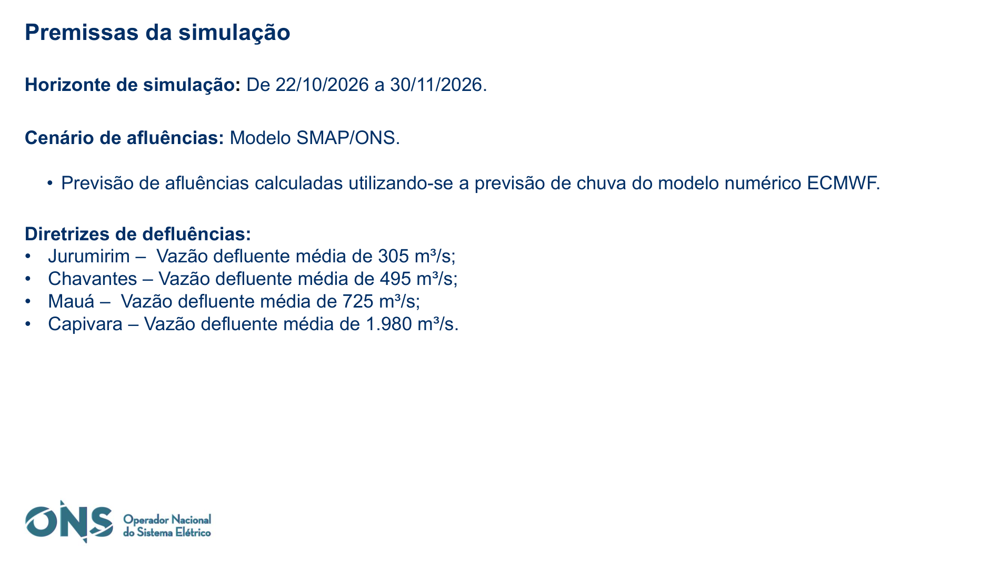

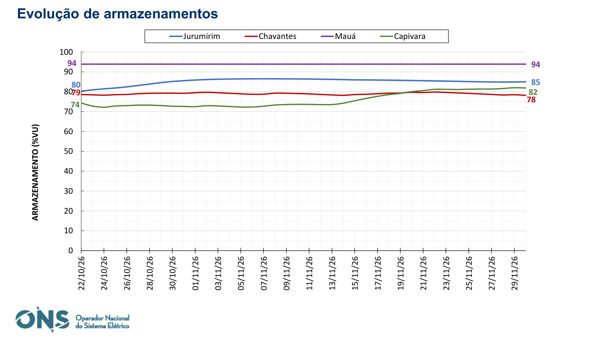
3.5 Riscos e pontos de atenção
Armazenamento elevado amplia a disponibilidade de água, mas não dispensa acompanhamento da margem operacional diante de novos aportes. Esta NT não calcula volume de espera ou risco de cheia a partir de 100% menos o volume útil observado: os painéis contêm suas próprias referências de operação, e a avaliação hidráulica requer informações adicionais. [O, pp. 15–17]
As premissas médias da simulação precisam ser reavaliadas quando a chuva e as afluências verificadas se afastarem do cenário. A dispersão meteorológica apresentada pelo CEMADEN não aparece quantificada como um leque de armazenamentos no gráfico final do ONS; essa diferença de representação deve permanecer explícita.
3.6 Implicações regulatórias e recomendações
A lâmina da Resolução ANA nº 132/2022 registra, no início da semana operativa de 17/10, Jurumirim a 566,56 m (80,19% VU), Chavantes a 472,75 m (83,87% VU) e Capivara a 332,56 m (85,97% VU), em faixa normal. O texto da própria lâmina diferencia a condição acima de 70% VU da condição até 70% VU dentro da faixa normal. Essa apresentação não permite interpretar a expressão sem restrição como dispensa de outras restrições hidráulicas ou dos usos múltiplos. [O, p. 14]
A recomendação analítica é acompanhar a evolução semanal de enquadramento, as fichas de restrição aplicáveis e a trajetória diária de afluências, defluências e níveis. Não foi recuperada decisão formal que determine mudança de regra ou nova vazão para a cascata. As restrições listadas pelo ONS são sistematizadas adiante, mantendo as referências originais. [O, p. 19]

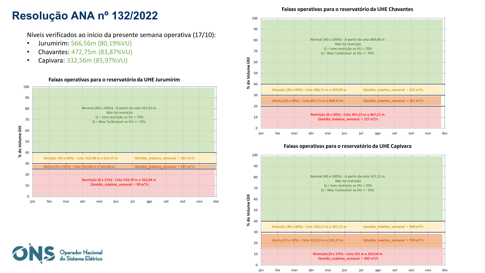

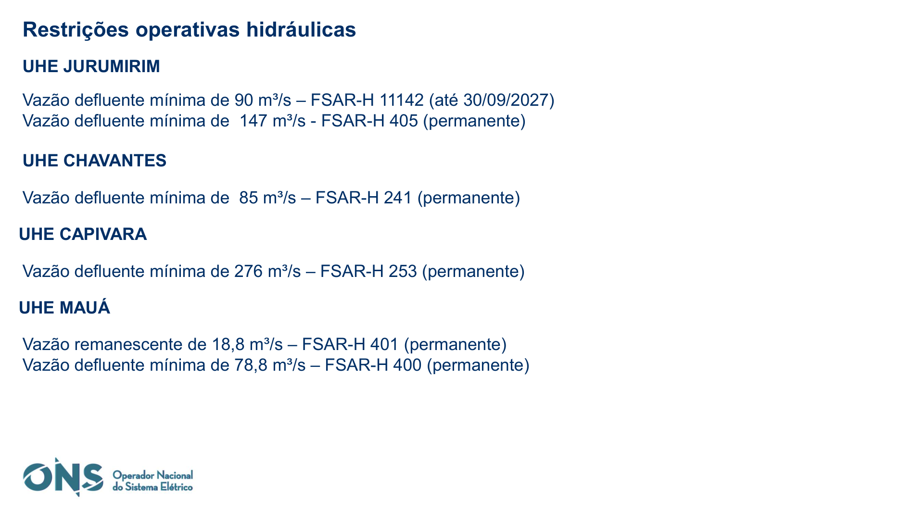
4. Cruzamentos técnicos e consequências operacionais
A convergência mais importante é entre o diagnóstico de umidade/excesso do CEMADEN e os aportes/estoques apresentados pelo ONS. A bacia não está sendo descrita, nesses materiais, como um sistema com escassez hidrológica generalizada. A análise integrada concentra atenção na persistência de novos aportes, na operação em cascata e nos efeitos locais, sem declarar que já existem impactos não documentados.
As diferenças entre produtos não são necessariamente contradições. TSI integra precipitação e vazão em uma janela; EAR representa estoque energético; VU representa armazenamento de um reservatório; chuva GEFS é previsão meteorológica; SMAP/ONS transforma um cenário de chuva em afluência e operação. A compatibilidade exige comparar variável, área contribuinte, data e horizonte, e não apenas sinais positivos ou negativos.
| Cruzamento | Convergência / diferença | Consequência operacional |
|---|---|---|
| TSI / SPI / IIS × ENA | Excesso hidrológico e aportes elevados coexistem com focos de seca fraca no IIS | Não usar um índice para substituir outro nem uniformizar toda a bacia |
| GEFS × SMAP/ONS–ECMWF | Modelos, variáveis e horizontes diferentes | 182 mm em 14 dias não determina os percentuais finais dos reservatórios |
| GloFAS × operação da cascata | Vazões naturais previstas não são defluências praticadas | Confrontar previsão dos afluentes com regras e observações operativas |
| ENA elevada × EAR em redução recente | Aporte energético elevado e diminuição de estoque podem coexistir | Examinar o balanço e a operação; não presumir inconsistência |
| Capivara × Tibagi / Mauá | Conexão espacial explicitada no diagrama do ONS | Acompanhar coincidência temporal dos aportes, sem atribuir vazão a uma única origem |
| Cortes 17, 20, 21 e 22/10 | Enquadramento semanal, painéis observados, IPDO e condições iniciais são distintos | Preservar a data em cada tabela e não corrigir valores por simples substituição |
Leitura SOE: a condição favorável de disponibilidade não equivale a ausência de risco operacional. A prioridade analítica é transformar a convergência de sinais em acompanhamento por trechos e reservatórios, com atualização das previsões e verificação das restrições. A conclusão permanece condicionada ao conjunto documental disponível, sem assumir o conteúdo do debate oral.
Voltar ao início ↑5. Horizontes de acompanhamento
| Horizonte | Sinal das apresentações | Verificação necessária |
|---|---|---|
| 1–2 semanas | GEFS com acumulado de cerca de 182 mm em 14 dias; GloFAS com pulsos previstos | Chuva efetivamente ocorrida por área contribuinte, resposta dos afluentes e atualização das defluências |
| 3–4 semanas | Tendências regionais CFS/ECMWF, em janelas não idênticas | Persistência dos sinais e deslocamento espacial dos maiores acumulados |
| Até 30/11 | Simulação ONS: 85%, 78%, 82% e 94% VU ao final | Aderência das afluências e defluências às premissas e revisão do cenário quando necessário |
| NDJ 2026/2027 | Produtos sazonais de chuva e vazão, com anomalia e incerteza | Evitar converter tendência trimestral em cronograma diário de operação |
Cenário de continuidade dos aportes: se a chuva prevista se realizar nas áreas contribuintes, aumenta a importância do acompanhamento da propagação e das condições a jusante. Cenário de frustração ou deslocamento da chuva: a trajetória de armazenamento pode se afastar da simulação, sem que o TSI acumulado mude imediatamente. Essas são interpretações condicionais para organização do acompanhamento; não são probabilidades adicionais calculadas pela NT.
Os materiais não permitem estabelecer uma data certa de pico, um único tempo de propagação para toda a cascata ou um limiar universal de impacto. Esses elementos não foram preenchidos com informação de outra bacia.
Voltar ao início ↑6. Leitura regulatória e restrições apresentadas
Esta seção reproduz e interpreta o conteúdo regulatório mostrado pelo ONS; não constitui revisão independente da vigência jurídica de todos os instrumentos. O enquadramento da semana de 17/10 é uma referência datada. Eventual avaliação de conformidade exige a regra integral, a ficha aplicável e os dados operativos correspondentes.
A página 19 apresenta duas referências de defluência mínima para Jurumirim: 90 m³/s, vinculada à FSAR-H 11142 com prazo até 30/09/2027, e 147 m³/s, vinculada à FSAR-H 405, permanente. A lâmina não explicita o mecanismo de compatibilização entre ambas. A NT mantém os dois registros e não escolhe silenciosamente um deles como mínimo universal.
| Usina | Restrição informada | Referência na apresentação |
|---|---|---|
| Jurumirim | Defluência mínima de 90 m³/s | FSAR-H 11142 — até 30/09/2027 |
| Jurumirim | Defluência mínima de 147 m³/s | FSAR-H 405 — permanente |
| Chavantes | Defluência mínima de 85 m³/s | FSAR-H 241 — permanente |
| Capivara | Defluência mínima de 276 m³/s | FSAR-H 253 — permanente |
| Mauá | Vazão remanescente de 18,8 m³/s | FSAR-H 401 — permanente |
| Mauá | Defluência mínima de 78,8 m³/s | FSAR-H 400 — permanente |
As defluências médias adotadas na simulação são superiores aos mínimos listados. Essa comparação aritmética não demonstra, por si, conformidade em cada instante nem substitui outras condições de operação. Uma média ao longo de semanas não informa os mínimos intradiários, a velocidade de variação de vazão ou os efeitos em captações e margens.
Não se aplicam automaticamente ao Paranapanema regras do GAOPS/Paraíba do Sul ou a estratégia discutida para Manso/Pantanal. A base regulatória desta leitura é a apresentada para o próprio sistema, com atenção às particularidades dos aproveitamentos e dos usos múltiplos. [O, pp. 14 e 19–20]
Voltar ao início ↑7. Registro da reunião e acompanhamento proposto
Foram confirmadas duas apresentações publicadas para a reunião de 22/10. Não foram fornecidos, nesta consolidação, ata, transcrição da gravação ou registros específicos de manifestações e decisões do debate. Não se transfere para esta reunião o encerramento sem ressalvas informado para a reunião do Pantanal. Ausência de registro disponível não equivale a inexistência de decisões.
Os itens abaixo são recomendações analíticas para o acompanhamento da SOE. Não constituem tarefas formalmente atribuídas às instituições nem encaminhamentos aprovados que tenham sido recuperados da reunião.
| Prioridade | Acompanhamento proposto | Evidência / condição para revisão |
|---|---|---|
| Alta | Confrontar chuva e afluências observadas com as novas rodadas de previsão | Mudança de localização, persistência ou intensidade dos aportes |
| Alta | Acompanhar a trajetória de defluências e níveis em Capivara e trechos seguintes | Variação dos hidrogramas; comunicação de restrições ou impactos locais |
| Alta | Preservar o controle de datas e premissas do ONS | Atualização do IPDO, semana operativa e simulações |
| Média | Esclarecer referências simultâneas de Jurumirim e inconsistências editoriais das fontes | Ficha integral aplicável ou confirmação da instituição responsável |
| Média | Incorporar decisões somente com registro verificável | Ata, transcrição validada ou manifestação informada pelo responsável |
Conclusão: as apresentações sustentam recuperação/aportes elevados e armazenamento relevante, associados à necessidade de atenção à operação da cascata sob novas chuvas previstas. Não sustentam, isoladamente, uma declaração de emergência, uma alteração de regra ou uma nova autorização de defluência.
Voltar ao início ↑8. Qualidade da informação e ressalvas de leitura
| Ponto | Tratamento adotado |
|---|---|
| Chuva parcial e climatologia — C, p. 3 | Adotados os valores visíveis de 122,0 mm até 20/10 e 135,5 mm da referência mensal. Não se publica percentual sem período comparável. |
| IARA — C, p. 7 | Rodapé identifica previsão/IARAp. Contagem de classes não é inventário de inundações ou perdas observadas. |
| Anotações de setembro no TSI — C, pp. 8–9 | Rótulos históricos apresentam diferenças de classe/valor que não são reconciliadas aqui. Usados os valores e classes atuais explicitados; sem calcular transição normativa de categoria. |
| Primeiro painel subsazonal — C, p. 17 | O rótulo 26/11/2026–02/11/2026 é temporalmente incompatível. O título geral informa 26/10–30/11. Preserva-se a figura e assinala-se a necessidade de conferência, sem correção silenciosa. |
| NDJ — C, p. 22 | A sequência é interpretada como novembro/dezembro de 2026 e janeiro de 2027 pelo contexto da edição. O cabeçalho abreviado original permanece na figura. |
| Mauá — O, pp. 8–9 | Tabela: 663 hm³; diagrama: 667 hm³. Não se usa um dos números para cálculo derivado sem validação. |
| Armazenamentos em datas diferentes — O, pp. 9, 14–17 e 21 | Preservados 17/10, 20/10, 21/10 e condição inicial da simulação de 22/10. Diferença de data não é tratada automaticamente como erro. |
| Duas referências mínimas de Jurumirim — O, p. 19 | Mantidas ambas. A compatibilização depende das fichas e condições aplicáveis. |
| Registro de deliberações | Não disponível neste conjunto documental; recomendações desta NT não são atribuídas como decisões da reunião. |
9. Fontes, apresentações integrais e rastreabilidade
Arquivos oficiais vinculados à reunião de 22/10/2026, acessados pelo registro /view e pelo download do PDF. As cópias foram verificadas por SHA-256; as 24 figuras são reproduções das páginas selecionadas.
- [C] CEMADEN — 23 páginas. Apresentação integral · Registro oficial na ANA.
- [O] ONS — 22 páginas. Apresentação integral · Registro oficial na ANA.
Acervo oficial de apresentações da ANA
Nota Técnica integral · PDF · Dados e indicadores · CSV · Manifesto de fontes e versão
Foram preservadas as ressalvas editoriais e temporais das fontes. Não foram incorporadas apresentações de outra reunião para preencher lacunas. Arquivos editáveis de trabalho não integram a publicação pública.
ANEXO I — Resumo para o Relatório Anual / reunião em números
Consulta rápida às principais variáveis e à sua leitura analítica. Os 29 registros da base tabular estão representados abaixo, sem substituir a análise integral ou a base para BI.
I.1 — Síntese hidroclimática e indicadores da bacia
Reunião de 22/10/2026. Leitura integrada: aportes elevados e estoques relevantes, com atenção à propagação de vazões pela cascata. Síntese da análise já publicada; não constitui nova decisão operativa.
Principais números — preservando a natureza e o período de cada dado
| Dimensão | Valor / unidade | Referência temporal | Natureza | Leitura analítica | Fonte |
|---|---|---|---|---|---|
| ENA — aporte energético | 292 % MLT | Outubro parcial até 21/10/2026 | Observado parcial | ENA elevada; não representa volume útil de um reservatório. | O, p. 4 |
| EAR — estoque energético | 78,6 % EARmáx | 21/10/2026 | Observado | Posição agregada da bacia; não se confunde com VU individual. | O, p. 11 |
| Chuva observada | 122,0 mm | 01 a 20/10/2026 | Observado parcial | Acumulado parcial; não representa fechamento de outubro. | C, p. 3 |
| Referência de chuva | 135,5 mm | Mês completo; base 2001–2024 | Climatologia | Climatologia do mês inteiro; não é referência dos mesmos 20 dias. | C, p. 3 |
| Chuva GEFS — 14 dias | ≈ 182 mm | Rodada 22/10/2026 00 UTC | Previsão | Valor aproximado e probabilístico; não equivale a afluência. | C, p. 14 |
TSI — índice bivariado, adimensional; outubro de 2026 parcial
| Recorte | TSI-6 / classe | TSI-3 / classe | Leitura entre escalas | Fonte |
|---|---|---|---|---|
| Rosana | 1,38 — Excesso moderado | 1,22 — Excesso moderado | Excesso moderado nas duas janelas. | C, pp. 8–9 |
| Capivara | 1,40 — Excesso moderado | 1,15 — Excesso moderado | Excesso moderado nas duas janelas. | C, pp. 8–9 |
| Jurumirim | 0,55 — Normal | 1,13 — Excesso moderado | Excesso na janela de 3 meses; normalidade na de 6 meses. | C, pp. 8–9 |
Comparabilidade: 122,0 mm até 20/10 e 135,5 mm da climatologia mensal têm durações distintas. Não se calcula um desvio para períodos iguais a partir desses dois valores.
Interpretação: as classes do TSI são as informadas pelo CEMADEN. Índice de excesso não mede volume armazenado nem comprova inundação; previsão de chuva não é observação.
I.2 — Reservatórios, operação e cenários
Observações e projeções estão em quadros separados. VU = volume útil; vazões em m³/s. Os traços indicam ausência na base selecionada, e não valor zero.
Condições observadas — VU em 21/10; vazões destacadas nos painéis até 20/10
| Reservatório | VU em 21/10 | Afluência (m³/s) | Defluência (m³/s) | Leitura operacional | Fonte |
|---|---|---|---|---|---|
| Jurumirim | 80% | 407 | 505 | Defluência acima da afluência no ponto final do painel. | O, pp. 9 e 15 |
| Chavantes | 79% | 588 | 984 | Defluência acima da afluência no ponto final do painel. | O, pp. 9 e 16 |
| Capivara | 76% | 3.790 | 5.062 | Maior magnitude de vazões do conjunto; acompanhar passagem a jusante. | O, pp. 9 e 17 |
| Mauá | 94% | — | — | Estoque de 94% VU; vazões observadas não constam da base selecionada. | O, p. 9 |
Cenário ONS de 22/10 a 30/11 — SMAP/ONS com chuva ECMWF
| Reservatório | Defluência média simulada (m³/s) | VU final projetado até 30/11 | Leitura / limite do cenário | Fonte |
|---|---|---|---|---|
| Jurumirim | 305 | 85% | Projeção de 85% VU, condicionada aos aportes e à operação simulada. | O, pp. 20–21 |
| Chavantes | 495 | 78% | Projeção de 78% VU; acompanhar aderência das afluências ao cenário. | O, pp. 20–21 |
| Capivara | 1.980 | 82% | Não confundir a média simulada de defluência com o valor observado de 5.062 m³/s. | O, pp. 20–21 |
| Mauá | 725 | 94% | Projeção final de 94% VU; não é garantia de estoque. | O, pp. 20–21 |
Cortes diferentes: o VU observado em 21/10 não é automaticamente a condição inicial da simulação de 22/10. Não se apresenta a diferença entre colunas como variação observada.
Subsídio ao Conjuntura: consolidar apenas observações comparáveis, preservando data, unidade e fonte. Não somar percentuais de VU ou ENA, misturar previsões na série observada nem tratar esta síntese como estatística anual homologada.
Memória técnica: os 29 registros da base tabular foram mantidos. A análise, as reproduções e as ressalvas operacionais/regulatórias permanecem na NT; nenhuma nova decisão foi atribuída à reunião.
Fontes: C = CEMADEN; O = ONS. Apresentações de 22/10/2026; páginas físicas dos PDFs. MLT: média de longo termo; EAR: energia armazenada; ENA: energia natural afluente.
Baixar somente o Anexo I — PDF de 2 páginas · Dados e indicadores — CSV preservado